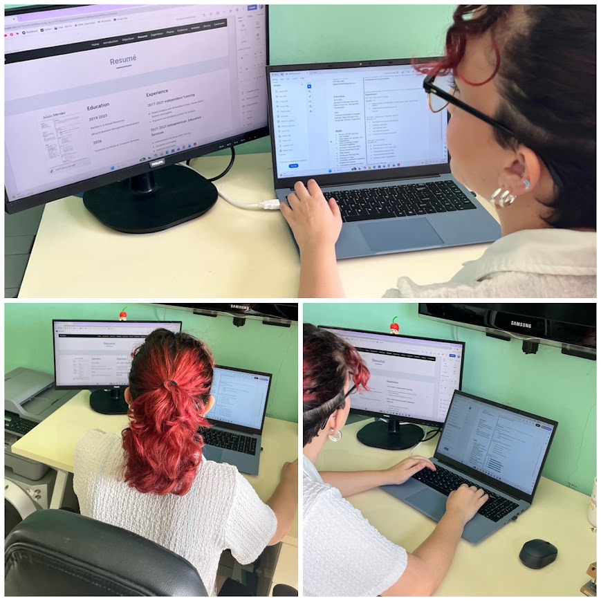

Intro & Resume
Academic path, degree background, and technical overview.
Open IntroComputer Science student with a BBA in Human Resources & Business Management—combining programming, data automation, and AI-assisted web development.

Explore my background, data operations experience, and technical coursework.
Academic path, degree background, and technical overview.
Open IntroInfosys BPM experience with Excel, VBA, Macros, and datasets.
Read NotesMy background, AI web work, and journey into programming.
Go to About"Combining structured business thinking, core programming, and modern AI tools to build clean web experiences."
Languages, automation workflows, and web tools from my programming training and data operations background.

Whether organizing high-volume spreadsheets with VBA and Macros or building multi-page sites with HTML, CSS, and AI workflows, I enjoy turning complex information into clean, structured layouts.
Building and styling responsive multi-page websites using HTML, CSS, JavaScript, PHP, and AI workflows.
Hands-on coursework across Python, C, C#, Visual Basic, and Office Visual Basic for Applications (VBA).
Working with Structured Query Language (SQL), Microsoft Office User (MOU) tools, and large dataset validation.
| Contact | Details & Links | |
|---|---|---|
| Phone / WhatsApp | 787-552-1568 | |
| Email Address | adalizmendez99@gmail.com | |
| Social Media | IG: @adalizmendez99 | |
| FB: Adaliz Mendez | ||
| Profiles | LinkedIn: Personal LinkedIn | |
| Connect with Adaliz Mendez | ||